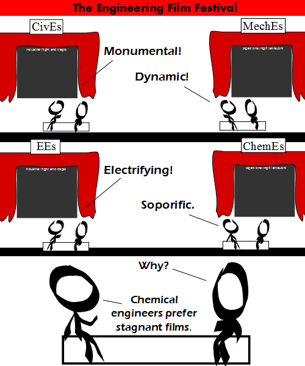

Comic JK 872
When I Feel Like It
⇤
<
?
>
⇥

⇤
<
?
>
⇥
Forum
.
RSS
.
Digg
.
Facebook
.
Reddit
.
Twitter
.
Stumbleupon
Enter your thoughts on number 872 here. Please, no spamming, trolling, phreaking, or bioengineering. note to late-comers: read the comments for this cartoon in the voices of Waldorf and Statler - the two theatre critics from "The Muppet Show" I don't get it and neither do you. >Quite correct. Though I can see what it is I'm not getting. >> I get it! Here, let me explain: Joke #1: All engineers criticize films using engineering-related words. Joke #2: The civil, mechanical, and electrical engineers all praised the movie for being game-changing in some way, while the chemical engineers called it 'soporific', meaning 'sleep-inducing'. This is because the movie *was* monumental, dynamic and electrifying, and chemical engineers prefer their films to be stagnant. Why is this funny? This is funny because chemical engineers often employ a 'stagnant film' assumption when talking about mass transfer. That is to say that they like to assume that if there are two materials in contact with each other that there exist thin, stagnant films of each material at the boundary, where transfer is dominated by diffusion, instead of by the motion of the fluids in question. I still don't get it. Now that you explained, I don't get it even more. >While I find it hilarious. Your mother's film festival was held in my pants. > s season of shorts? >> Butt-to-butt double dildo action. Sexy! >>>))<>(( back and forth, forever. >>> / ( ( / `, ( | | )______)_____/ | _/___________ ( | | 00( ( >>>>What's with all the porn on this board? >>>>> It was your mother's idea. >I think it is a mutant upside down cow.